Пазарният парадокс: Защо NVIDIA се оказа жертва на собствения си успех
През последните две години глобалният технологичен сектор беше доминиран от едно неоспоримо име. Пионерът в производството на графични ускорители NVIDIA се превърна в синоним на революцията в сферата на изкуствения интелект, благодарение на своите забележителни хардуерни постижения и софтуерната си екосистема CUDA [1]. Напоследък обаче пазарната динамика започна да се променя по изключително неочакван начин, изправяйки лидера пред нов тип предизвикателство. Компанията се оказва в парадоксалната ситуация да бъде притисната от собствения си пазарен успех, докато по-прости и по-малко забележителни технологии бележат исторически финансови рекорди.
Парадоксът на пазарната оценка
Въпреки че финансовите показатели на компанията остават изключително силни, а дългосрочните прогнози за нейните приходи продължават да се повишават, пазарната оценка на гиганта претърпя сериозен удар. От пика си през май 2026 г., акциите на компанията се сринаха с 15%, което се равнява на загуба на стотици милиарди долари от пазарната ѝ капитализация [1]. Този спад създаде пазарна аномалия: спрямо очакваните бъдещие печалби, акциите на NVIDIA в момента са по-евтини от средното ниво за големите американски компании в индекса S&P 500.
Това означава, че инвеститорите плащат по-малко за всеки долар от прогнозираната бъдеща печалба на производителя на GPU, отколкото за средната американска корпорация [1]. За всеки, който цени технологичните постижения на NVIDIA – от създаването на CUDA до разработването на най-сложния силициев хардуер на планетата – това изглежда разочароващо. Но реалността е, че капиталите на Уолстрийт просто се пренасочват към други сегменти от веригата за доставки, където в момента се намират критичните тесни места.
Възходът на паметта и краят на GPU дефицита
Докато инвестиционният интерес към графичните процесори се охлажда, капиталите се насочват към производителите на системна памет. През същия период, в който акциите на NVIDIA отбелязаха спад, стойността на Micron – един от трите най-големи производители на DRAM памет в света – се увеличи близо три пъти [1]. Това утвърди паметта като новия най-горещ залог в сектора на ИИ инфраструктурата.
Основната причина за това разместване е проста: критичният недостиг на графични ускорители, който изглеждаше толкова притеснителен през изминалата година, започна да намалява [1]. Свободният изчислителен капацитет се увеличи, а пазарът започна да се балансира. В същото време центровете за данни изпитват остра нужда от огромни количества високоскоростна памет, за да могат реално да използват закупените процесори.
Ornn и падащите цени на спот пазара
Динамиката на пазара се илюстрира най-добре от движението на спот цените на графичните процесори под наем. Данните от децентрализирания пазар за изчислителни ресурси Ornn разкриват ясна тенденция: цената за наемане на един графичен процесор NVIDIA H100 в реално време достигна своя пик през май 2026 г. на ниво от около $3.20 на час [1]. Оттогава насам обаче индексът бележи постоянен спад, движейки се в синхрон със спада в цената на акциите на NVIDIA.
Този спад в цената на изчислителния капацитет е пряк резултат от промените в предлагането. Според Уейн Нелмс, съосновател и технически директор на Ornn, пазарните сили на търсенето и предлагането бързо променят средата [1]. Големите технологични компании като Google, Amazon и Microsoft, а също така и компании като OpenAI, активно разработват собствени специализирани чипове (custom silicon) за ИИ изчисления [1]. Дори и тези чипове да не достигат производителността на Blackwell архитектурата на NVIDIA, те са достатъчно добри, за да задоволят част от вътрешното търсене и да свалят цените на пазара на изчисления.
HBM паметта като новото технологично тясно място
Докато цените на изчислителната мощност падат, пазарът на високоскоростна памет с голяма пропускателна способност (HBM) преживява истински бум. Производителите на памет са в много по-проста позиция: те произвеждат компоненти, които се подобряват постепенно през последните 20 години, но без които съвременните процесори са практически безполезни [1].
Тъй като търсенето на HBM чипове нараства по-бързо, отколкото производителите могат да повишат производствения си капацитет, цените на тези памети скочиха десетократно през последната година [1]. Това е олигополен пазар, контролиран от едва три големи компании – Micron, SK Hynix и Samsung. Тези производители реализират огромни печалби, възползвайки се от факта, че паметта се превърна в най-критичния дефицит в съвременните центрове за данни.

Изображение: Svetni.me / Авторско изображение
Жестоката ирония на успеха
В крайна сметка настоящата пазарна конюнктура представлява парадоксална ситуация за NVIDIA. Компанията направи огромни усилия да докаже на света колко ценни са графичните изчисления, но с това създаде пазар, в който всеки технологичен гигант иска да участва със собствен хардуер [1]. Сега, когато конкуренцията при изчисленията нараства и натиска цените надолу, по-простите технологии като DRAM и HBM паметите бележат огромни печалби на заден план [1]. NVIDIA се оказва жертва на собствения си успех, проправяйки пътя за пазар, който вече не зависи изцяло от нейния монопол.
Източници:
[1]: Nvidia is a victim of the compute marketplace it created - TechCrunch